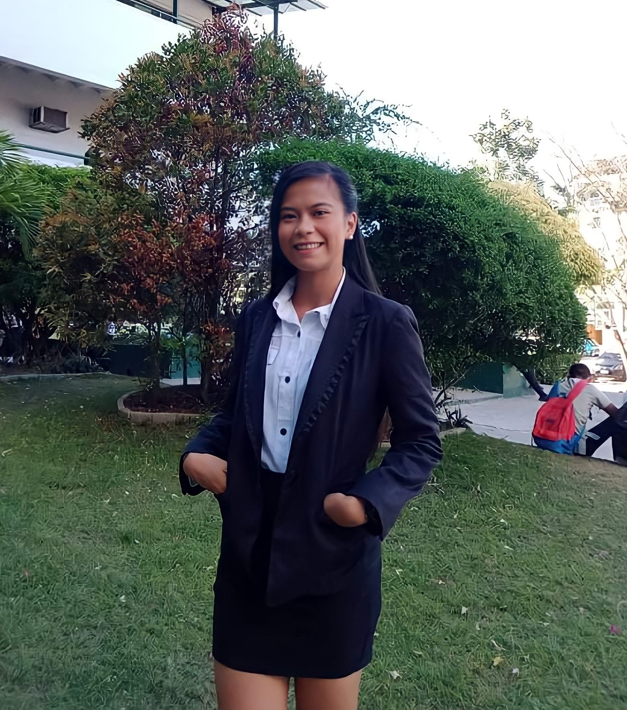

PORTFOLIO
ABOUT ME
Name : Abegail A. Trani
Birthdate : April 05, 2002
Birthplace : Elsavador City, Misamis Oriental
Age : 20 years old
Address : Zone 2, Canitoan CDOC
Favorite Color : Pink
Hobbies
EDUCATION
INFORMATION TECHNOLOGY - University of Science and Technology of Southern Philippines - CAGAYAN DE ORO CITY
ACCOUNTANY AND BUSINESS MANAGEMENT - PHINMA CAGAYAN DE ORO CITY
CANITOAN NATIONAL HIGH SCHOOL
CANITOAN ELEMENTARY SCHOOL
SKILLS